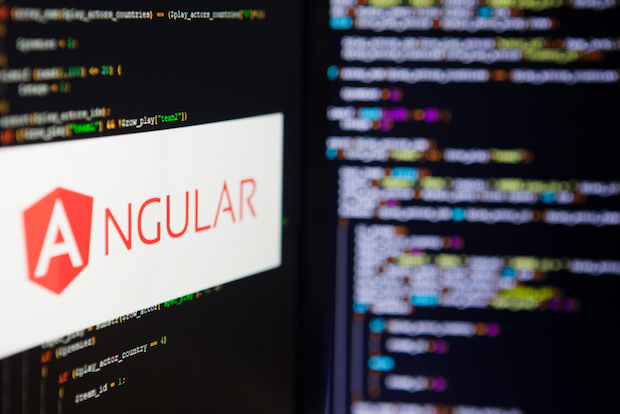

Angular es un framework de código abierto desarrollado por Google que se utiliza para crear aplicaciones web dinámicas y escalables. Es una de las tecnologías más populares en el mundo del desarrollo web, y ha sido adoptada por numerosas empresas y organizaciones en todo el mundo. En este artículo, exploraremos algunos de los aspectos más interesantes de Angular y cómo ha transformado la forma en que se construyen aplicaciones web. En primer lugar, Angular utiliza TypeScript, un lenguaje de programación que se basa en JavaScript pero que incluye algunas características adicionales, como la verificación de tipos estáticos y la programación orientada a objetos. Esto permite a los desarrolladores escribir código más seguro y fácil de mantener, lo que a su vez aumenta la eficiencia y la productividad del equipo de desarrollo. Además, Angular utiliza un patrón de diseño conocido como Modelo-Vista-Controlador (MVC), que separa la lógica de negocio de la interfaz de usuario y el manejo de eventos. Esto hace que sea más fácil para los desarrolladores trabajar en diferentes partes de una aplicación sin interferir con el trabajo de otros, lo que a su vez aumenta la velocidad de desarrollo. Otra característica interesante de Angular es su capacidad para crear aplicaciones web de una sola página (Single-Page Applications o SPAs). En lugar de cargar una página completamente nueva cada vez que un usuario hace clic en un enlace, Angular carga solo la sección relevante de la página, lo que resulta en una experiencia de usuario más rápida y fluida.
Angular también cuenta con una gran cantidad de módulos y bibliotecas predefinidas que facilitan la creación de aplicaciones web complejas. Estas bibliotecas incluyen herramientas para animaciones, manejo de formularios, enrutamiento y mucho más. Además, existe una gran comunidad de desarrolladores que contribuyen con código y brindan soporte a través de foros y grupos de discusión en línea. En conclusión, Angular es una tecnología revolucionaria que ha transformado la forma en que se construyen aplicaciones web. Con su capacidad para crear aplicaciones web dinámicas y escalables, su enfoque en la seguridad y la facilidad de mantenimiento del código, y una amplia gama de bibliotecas y módulos predefinidos, Angular ha sido adoptado por muchas empresas y organizaciones en todo el mundo. Si estás buscando una tecnología para construir tu próxima aplicación web, Angular es definitivamente una opción que debes considerar.
"Un fanático del Angular que solo quiere compartir su pasión"